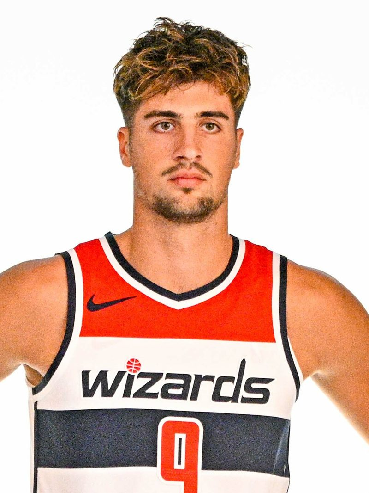
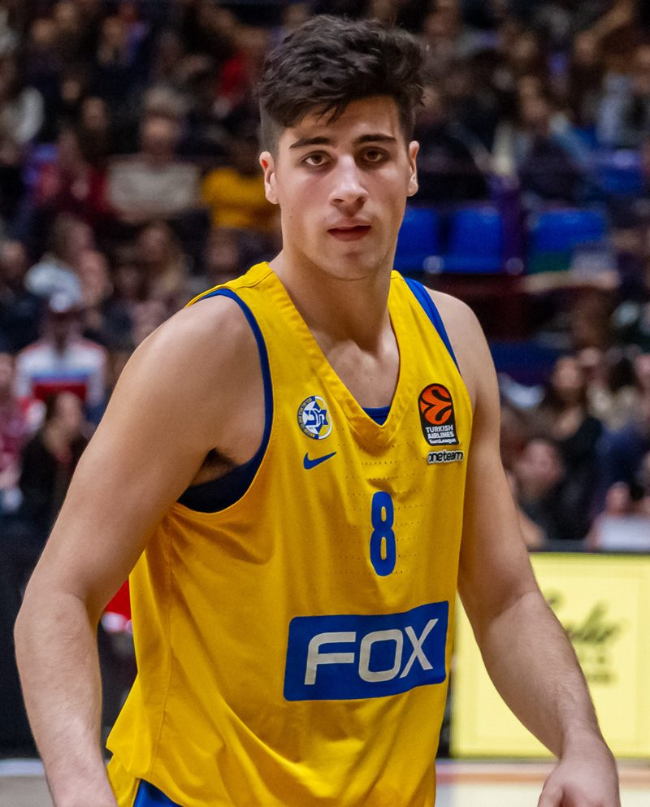
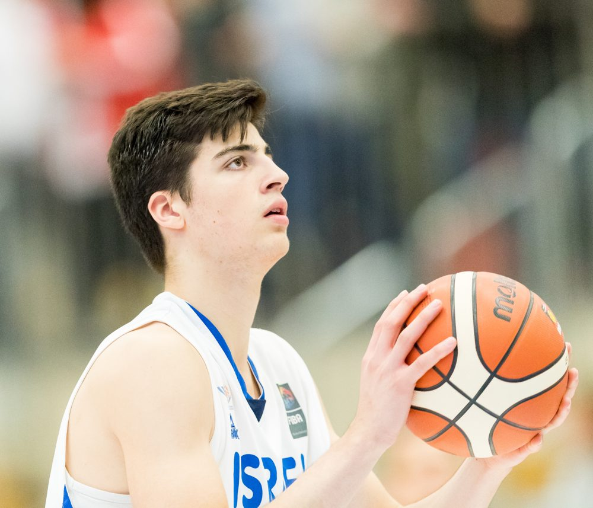

An Israeli basketball story
Deni AvdijaFrom Beit Zera to the NBA All-Star Game
Two European youth titles, an Israeli League MVP, the #9 pick of the 2020 NBA Draft, and in 2026 the first Israeli ever named an NBA All-Star.
Use → / ← or Space, click the arrows, or swipe. F = fullscreen · N = notes · P = presenter view

At a glance
Who is Deni Avdija?
A kibbutz on the southern shore of the Sea of Galilee.
Nickname: “Turbo”, for his fast, aggressive drives.
2018 and 2019, plus 2019 tournament MVP.
Washington Wizards; the highest an Israeli has been drafted.
Plus 6.9 rebounds and 6.7 assists in 66 games.
2026 All-Star Game, Feb 15, Inglewood, California.
Sources: Basketball-Reference [8]; NBA.com/AP [1]; FIBA [15][18]; JTA [24]; Wikipedia (nickname) [30]
Chapter 1 · Roots
A basketball family
- Born on January 3, 2001 in Kibbutz Beit Zera, on the southern shore of the Sea of Galilee.
- His father, Zufer Avdija, was born in the former Yugoslavia and starred for Red Star Belgrade from 1979 to 1990, serving as team captain.
- Zufer was also part of the Yugoslavia national team that won bronze at the 1982 FIBA World Championship, then moved to Israel to keep playing.
- His mother, Sharon Artzi, is Israeli.
- Deni started playing basketball at about age 8, in the Bnei Herzliya youth program.
Sources: NBA.com/AP [1]; ESPN, M. Schmitz (2019) [23]; Maccabi Tel Aviv player page [21]; Wikipedia [30]
Two generations
Chapter 2 · Maccabi Tel Aviv (2013–2020)
The youngest ever
- Joined Maccabi Tel Aviv's youth program in 2013 and led it to three straight Israeli youth championships (2017–2019).
- Signed his first pro contract in November 2017; debuted on Nov 19, 2017 vs Ironi Nes Ziona at 16 years, 320 days, the youngest player ever for Maccabi's senior team.
- Was part of three straight Israeli League title teams (2018, 2019, 2020).
- In 2020, at 19, he became the youngest MVP in Israeli League history.
Sources: Maccabi Tel Aviv [21]; Eurohoops [22]; Wikipedia [30]

Chapter 3 · ★ Youth championships
Back-to-back champions of Europe
- Israel's first-ever title in any FIBA competition.
- Deni, at 17, was the youngest player in the tournament.
- Named to the All-Star Five; teammate Yovel Zoosman was MVP.
- Averaged 12.7 pts and 6.4 reb in 7 games.
- Israel defended its title, the first repeat champion since Serbia in 2007–08.
- Deni was named tournament MVP.
- Averaged 18.4 pts, 8.3 reb, 5.3 ast, 2.4 blk, 2.1 stl.
- In the final: 23 points, 7 assists, 5 rebounds.
Sources: FIBA 2018 title report [18], 2018 final [19], 2018 player stats [20]; FIBA 2019 final report [15], 2019 player stats [16], 2019 event page [17]
★ Youth championships · the leap
From role player to MVP
Per game at the U20 Europeans
2018 (age 17)2019 (age 18, MVP)
Sources: FIBA player stats 2018 [20] and 2019 [16]
Chapter 4 · NBA Draft and Washington (2020–2024)
#9 pick, the Wizards years
- Nov 18, 2020: the Washington Wizards draft him 9th overall, the highest an Israeli player has ever been picked (Omri Casspi went 23rd in 2009).
- NBA debut Dec 23, 2020. Rookie year: 54 games, 6.3 points.
- 2021-22: played all 82 games.
- Oct 2023: signed a 4-year, $55 million contract extension.
- Feb 14, 2024: career-high 43 points and 15 rebounds vs New Orleans.
- 2023-24: career highs across the board, 14.7 pts, 7.2 reb, 3.8 ast, 50.6% FG.
Sources: Basketball-Reference [8]; JTA [24]; NBA.com game page [25]
Chapter 5 · Portland Trail Blazers (2024– )
The trade to Rip City
July 6, 2024: the deal
Malcolm Brogdon, Bub Carrington (the #14 pick of 2024), a 2029 1st-round pick, and 2nd-round picks in 2028 and 2030
Year one in Portland (2024-25)
Mar 2, 2025: first career triple-double, 30 pts, 12 reb, 10 ast at Cleveland (an overtime loss, 133–129).
Sources: Basketball-Reference (transaction and stats) [8]; NBA.com/Trail Blazers [26]
The climb
Points per game, season by season
Washington WizardsPortland Trail Blazers · ★ All-Star season
Source: Basketball-Reference, regular-season per-game stats [8]
★ Most recent season · 2025-26
The breakout: by the numbers
Year-over-year jump
2024-252025-26
Sources: Basketball-Reference [8]; OregonLive season review [9]; NBA.com MIP announcement [10]; record via Land of Basketball [14]
★ 2025-26 highlights
A season of firsts
- Jan 5, 2026: named Western Conference Player of the Week for the first time (26.8 pts, 8.3 reb, 9.8 ast in a 3–1 week).
- Jan 7, 2026: season-high 41 points vs the Houston Rockets.
- Feb 1, 2026: named an NBA All-Star, the first Israeli ever.
- Fans chanted “MVP” for him at the Moda Center as he became the leader of a young team.
Sources: NBA.com Players of the Week [11]; Trail Blazers video (Rockets game) [V5]; NBA.com/AP [1]; OregonLive [9]
★ 2025-26 · the postseason
41 points to reach the playoffs
- Apr 14, 2026, Play-In at Phoenix: 41 points, 7 rebounds, 12 assists. Portland came back from 11 down in the 4th quarter and won 114–110; his go-ahead three-point play came with 16.1 seconds left.
- That clinched the No. 7 seed in the West.
- Playoff debut, Apr 19: 30 points, 10 rebounds and 5 assists at San Antonio.
- No. 2 seed San Antonio won the series 4–1; Portland took Game 2, 106–103. Deni averaged 22.2 points in the series.
Sources: NBA.com/AP Play-In recap [12]; NBA.com Game 1 takeaways [13]; Basketball-Reference playoffs [8]; Land of Basketball series page [14]
★ The All-Star selection · verified
The first Israeli NBA All-Star
- On Sunday night, Feb 1, 2026 (US time), Deni was named a Western Conference reserve for the 2026 All-Star Game. Reserves are chosen by the league's 30 head coaches.
- He finished 5th in Western Conference fan voting, with about 2.2 million votes.
- He was the 17th All-Star in Trail Blazers history, and the team's first since Damian Lillard in 2023.
- The new format had three teams (USA Stars, USA Stripes, World); Deni played for Team World.
Sources: NBA.com/AP [1]; ESPN [2]; Jerusalem Post [3]; Israel Hayom [4]
★ All-Star Game · Feb 15, 2026 · Intuit Dome, Inglewood
Starting for Team World
- Started both of Team World's round-robin games, alongside stars such as Jokić, Dončić, Gilgeous-Alexander and Wembanyama.
- Scored Israel's first-ever All-Star points on a three-pointer, and later added a dunk.
- Totals: 15 minutes, 5 points, 4 assists.
- Team World lost 37–35 (OT) to the Stars and 48–45 to the Stripes, so it did not reach the final.
Sources: Ynetnews [6]; KGW [5]; ESPN box score [7]
Chapter 6 · Israel national team
Playing for Israel
- Youth: U20 European champion in 2018 and 2019 (MVP in 2019).
- EuroBasket 2022 (Prague): 23 points and 15 rebounds in the 89–87 overtime win over Finland in the opener.
- EuroBasket 2025: led Israel's roster, averaging 24.0 points, 6.8 rebounds and 2.7 assists in 6 games (3rd in the tournament in scoring).
- Israel reached the Round of 16 and lost 84–79 to Giannis Antetokounmpo's Greece; Deni scored 22.
Sources: FIBA EuroBasket 2022 game page [27]; FIBA EuroBasket 2025 player profile [28]; FIBA Greece vs Israel report [29]; FIBA U20 [15][18]

The journey
Career timeline
Born Jan 3 in Kibbutz Beit Zera
2013: joins Maccabi Tel Aviv youth
Pro debut for Maccabi at 16 years, 320 days
Back-to-back U20 European titles; 2019 MVP
Israeli League MVP; drafted #9 by Washington
$55M extension; 43-point career high
Traded to Portland (July 6)
First Israeli All-Star; 41-point Play-In win; first playoffs
Sources: [8] [15] [18] [21] [22] [24] [25] [1] [12]
Why he matters
Legacy so far
A first for Israel
The first Israeli NBA All-Star and the highest-drafted Israeli ever, opening the door for young players at home.
Growth every year
His scoring rose in every NBA season, from 6.3 to 24.2 points per game. He kept improving his shooting, playmaking and free throws.
Built at home
From Bnei Herzliya to Maccabi to two European titles with Israel's youth teams: proof that Israeli development programs work.
A team leader
A franchise cornerstone in Portland, and Israel's top scorer at EuroBasket 2025.
Two cultures
The son of a Yugoslav basketball star and an Israeli mother, he grew up in Israel and became its biggest basketball star.
💬 Discuss
Which skill improved most? What can we learn from a player who got better every single season?
Sources: NBA.com/AP [1]; JTA [24]; Basketball-Reference [8]; OregonLive [9]; FIBA [28]
Sources & credits
Sources
- NBA.com (AP): Deni Avdija becomes 1st Israeli named to NBA All-Star Game. nba.com/news/deni-avdija-becomes-1st-israeli-named-to-nba-all-star-game
- ESPN: Blazers' Deni Avdija first Israeli to be named NBA All-Star. espn.com/nba/story/_/id/47803208
- The Jerusalem Post: Israel's Deni Avdija selected for NBA All-Star game. jpost.com/israel-news/sports/article-885285
- Israel Hayom: Deni Avdija named NBA All-Star (Feb 2, 2026). israelhayom.com/2026/02/02/deni-avdija-named-nba-all-star
- KGW: Avdija scores 5 points in first All-Star appearance. kgw.com/…/283-ef76db83-bd45-49d7-bb0a-448daa41d547
- Ynetnews: Avdija records Israel's first points in All-Star debut. ynetnews.com/sport/article/hyekmgg00zx
- ESPN box score: Team Stripes 48, World 45 (Feb 15, 2026). espn.com/nba/boxscore/_/gameId/401838142
- Basketball-Reference: Deni Avdija (stats, draft, transactions, contract). basketball-reference.com/players/a/avdijde01.html
- OregonLive: All-Star Deni Avdija cements status as franchise cornerstone (May 2026). oregonlive.com/blazers/2026/05/…season-review.html
- NBA.com: Nickeil Alexander-Walker named 2025-26 Most Improved Player (finalists). nba.com/news/kia-nba-most-improved-player-2025-26
- NBA.com: Deni Avdija, Tyrese Maxey named NBA Players of the Week. nba.com/news/nba-players-week-deni-avdija-tyrese-maxey
- NBA.com (AP): Avdija fuels late comeback as Blazers drop Suns in Play-In. nba.com/news/trail-blazers-suns-play-in
- NBA.com: Trail Blazers-Spurs Game 1 takeaways. nba.com/news/trail-blazers-spurs-2026-playoffs-game-1-takeaways
- Land of Basketball: Spurs vs Trail Blazers, 2026 West First Round. landofbasketball.com/playoffs_series/2026_spurs_vs_trail_blazers.htm
- FIBA: Israel take down Spain, defend U20 European title (2019). fiba.basketball/en/news/israel-take-down-spain-…
- FIBA: Deni Avdija, U20 European Championship 2019 player stats. fiba.basketball/en/history/281-fiba-u20-eurobasket/208079/players/238242-deni-avdija
- FIBA: U20 European Championship 2019 event page (winner, MVP). fiba.basketball/en/history/281-fiba-u20-eurobasket/208079
- FIBA: Israel claim historic title at U20 European Championship (2018). fiba.basketball/en/news/europe-u20-2018-news-israel-claim-historic-title-…
- FIBA: Israel vs Croatia, 2018 U20 final. fiba.basketball/en/history/281-fiba-u20-eurobasket/200004/games/79811-ISR-CRO
- FIBA: Deni Avdija, U20 European Championship 2018 player stats. fiba.basketball/en/history/281-fiba-u20-eurobasket/200004/players/238242-deni-avdija
- Maccabi Tel Aviv: Deni Avdija player page. maccabi.co.il/en/players/deni-avdija
- Eurohoops: Deni Avdija becomes youngest MVP in Israeli League history. eurohoops.net/en/others/1085244/…
- ESPN (Mike Schmitz, 2019): Deni Avdija could be a polarizing top draft prospect in 2020. espn.com/nba/story/_/id/27281239
- JTA: Israeli teen Deni Avdija goes to Washington Wizards with 9th pick, making history. jta.org/2020/11/18/sports/…
- NBA.com: Wizards vs Pelicans, Feb 14, 2024. nba.com/game/was-vs-nop-0022300784
- NBA.com/Trail Blazers: Blazers fall short in OT to Cavs despite Avdija's first triple-double. nba.com/blazers/news/…first-triple-double
- FIBA: Israel vs Finland, EuroBasket 2022. fiba.basketball/en/history/208-fiba-eurobasket/208210/games/102043-ISR-FIN
- FIBA: Deni Avdija, EuroBasket 2025 player profile. fiba.basketball/en/events/fiba-eurobasket-2025/teams/israel/238242-deni-avdija
- FIBA: Giannis counts to 37, Greece soar to Quarter-Finals. fiba.basketball/en/news/giannis-counts-to-37-…
- Wikipedia: Deni Avdija (cross-check for background and the nickname only). en.wikipedia.org/wiki/Deni_Avdija
🎬 Videos (YouTube, embedded via youtube-nocookie)
[V1] FIBA Basketball: Best Plays of MVP Deni Avdija, U20 2019. youtu.be/SlM6WlHljUw[V2] Portland Trail Blazers: Deni Avdija's Top Plays, 2025-26 Season. youtu.be/OBuu8x54uOQ
[V3] Portland Trail Blazers: 41 points, 12 assists in Play-In win. youtu.be/fYHv9qQouDU
[V4] Portland Trail Blazers: NBA All-Star Games Highlights, Feb 15, 2026. youtu.be/hTc9YG2RSVU
[V5] Portland Trail Blazers (source only): Season-high 41 points vs Houston Rockets. youtu.be/S_fO8GYk6aE
📷 Photos (Wikimedia Commons)
Wizards 2022: All-Pro Reels, CC BY-SA 2.0. File pageMaccabi 2019: Ermanno Gallo, CC BY-SA 2.0. File page
Israel U18 2018: Sven Mandel, CC BY-SA 4.0. File page
Images were resized for the web. All charts and graphics were made by Kita from the sourced stats. Facts were checked on Oct 9, 2026.